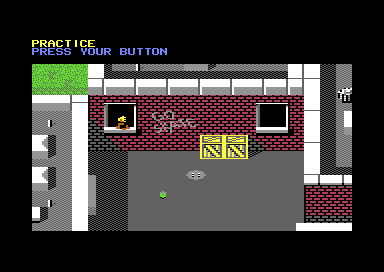

<meta charset="utf-8">
<meta name="viewport" content="width=device-width, initial-scale=1">
<title>Skate or Die!</title>
<link rel="preconnect" href="https://fonts.googleapis.com">
<link rel="stylesheet" href="https://fonts.googleapis.com/css2?family=Lato:wght@400;700;900&family=IBM+Plex+Mono:wght@400;500&display=swap">
<link rel="stylesheet" href="reference/sod-page.css">
<!-- tabs -->
<header class="hero">
  <p class="eyebrow">Commodore 64 · 1987 · Electronic Arts</p>
  <h1>Skate or Die!</h1>
  <p class="sub">The Downhill Jam from the code: two skaters down an alley, twelve ways to hit each other, points for smashing the rubbish, and a time bonus that drains away as the clock runs.</p>
</header>
<main class="wrap" data-part="jam">
<section id="event">
  <p class="fig">01 · The event</p>
  <h2 class="t">A race where the other skater is a target</h2>
  <p>The Downhill Jam is a race for two down an alley, back yards and a street, on side 2 of the disk. In practice the second skater is Lester, played by the computer. At the start, whoever presses fire first becomes the left-hand player (<code>$325B</code>), and both then choose REGULAR or GOOFY. The race starts when both have pressed fire (<code>$14F0</code>).</p>
  <figure class="sod-shot"><figcaption>The Downhill Jam. Captured in an emulator from the copy studied here.</figcaption></figure>
  <p>The stick works as in the Downhill Race: down pushes, up brakes, left and right lean, and fire with up jumps. Fire with left, right or a diagonal is an attack, one of twelve chosen by the stick and the way the skater faces (<code>$2DC7</code>). Goofy swaps the directions of the moves without fire, but not of the attacks.</p>
</section>
<section id="fight">
  <p class="fig">02 · Fighting</p>
  <h2 class="t">A hit lands on the third frame of five</h2>
  <p>An attack starts only when the skater faces straight down or straight up the hill, and it costs a step of speed (<code>$315C</code>). It connects on its third frame (<code>$3947</code>), and only if the two skaters are within 16 pixels of each other both across and down (<code>$0BCF</code>). Four attacks are high and miss a ducking skater; four are low and miss a skater in the air (<code>$0D98</code>). A hit knocks the victim down for 200 frames, and the attacker scores 5.</p>
  <p>When both skaters are mid-attack in the same frame, a table decides what happens (<code>$3BC9</code>): both are shoved, one falls, or both fall. Bumping without attacking has rules of its own (<code>$0DD6</code>). Head on, the skater with the lower reach falls and the other scores 5; side by side or from behind, the two swap speed and heading; crossing paths, both fall.</p>
  <p>One attack can never land. Attack 12, fire with up and left while facing right, has <code>$63</code> where its hitting frame should be (<code>$3953</code>).</p>
</section>
<section id="course">
  <p class="fig">03 · The course</p>
  <h2 class="t">Rubbish worth points, and a police car at the bottom</h2>
  <p>Like the race, the Jam's course is 255 rows of 40 characters, with a second map giving each cell a colour and a kind of ground (<code>$5A00</code>). Cans are worth 2 points, bottles 1 and bins 3, whether the skater hits them or, for cans and bottles, rides over them (<code>$17AA</code>). At the bottom of the hill is a police car. Hitting it low is a crash; jumping onto its roof (<code>$1AAE</code>) sets off the siren and adds <code>$0D</code> to the points waiting to be counted. The game adds in decimal there, so that is 13 points only when the waiting points end in 0.</p>
  <div class="plate">
    <canvas id="map" class="scr" style="max-width:240px"></canvas>
    <div id="legend" class="note"></div>
    <p class="cap">The whole course as the game sees it, drawn from the high four bits of each cell of the map at <code>$5A00</code>, row 0 at the top. The kinds of ground are the handlers of the table at <code>$3873</code>.</p>
  </div>
</section>
<section id="bonus">
  <p class="fig">04 · The time bonus</p>
  <h2 class="t">Slow skaters score nothing</h2>
  <p>Each skater starts with a bonus of 9,996 (<code>$20CB</code>). Every six frames it loses 6 and the race clock gains a tenth of a second (<code>$23F8</code>), so the bonus is gone at 2:46.6 on the clock. From then on, points are thrown away as they are earned (<code>$0AD2</code>). Whatever is left at the finish is added to the score, which makes the bonus most of a good score. The clock, as in the race, is set for 60 frames a second, so on a European machine its seconds are 1.2 real ones.</p>
  <p>A skater left 120 pixels behind is dragged back into view (<code>$28D4</code>) and pays for it: five seconds on the clock and 300 off the bonus (<code>$2476</code>). At the end both scores go to the event manager, six digits each, the second skater's in its own slot (<code>$15F8</code>).</p>
</section>
<section id="lester">
  <p class="fig">05 · Lester</p>
  <h2 class="t">Eleven waypoints and a right hook</h2>
  <p>Lester follows 11 waypoints down the course, each a row, a column and a heading (<code>$3BED</code>). Lester holds its speed against the player's position rather than racing (<code>$3397</code>), and when the player is within 16 pixels and on their feet it attacks, always with fire and right (<code>$33BD</code>).</p>
</section>
</main>
<script src="../../lib/c64.js"></script>
<script src="reference/sod-page.js"></script>
<script>
(async function () {
  try {
    const J = await SOD.load('jam'), M = J.ram, s = 4, cv = document.getElementById('map');
    const ctx = C64.canvas(cv, 40 * s, 255 * s);
    // the attribute map's high nibble, by the terrain handlers of $3873 (parts/jam/facts.md)
    const T = [['open ground', 15], ['wall', 0], ['solid object', 9], ['fall', 2], ['solid object', 9], ['open ground', 15], ['can or bottle', 7],
               ['fall', 2], ['hazard', 10], ['striped ramp', 14], ['kerb', 12], ['clothesline, finish', 1], ['moving object lane', 4], ['shadow', 11],
               ['open ground', 15], ['rough, police car', 8]];
    for (let r = 0; r < 255; r++) for (let c = 0; c < 40; c++) {
      ctx.fillStyle = C64.PAL[T[M[0x5A00 + r * 40 + c] >> 4][1]]; ctx.fillRect(c * s, r * s, s, s);
    }
    const seen = new Set();
    document.getElementById('legend').innerHTML = T.filter(t => !seen.has(t[0]) && seen.add(t[0])).map(t =>
      `<span style="display:inline-block;width:10px;height:10px;background:${C64.PAL[t[1]]};border:1px solid #888;margin:0 4px 0 10px"></span>${t[0]}`).join(' ');
  } catch (e) { SOD.fail(e); }
})();
</script>
